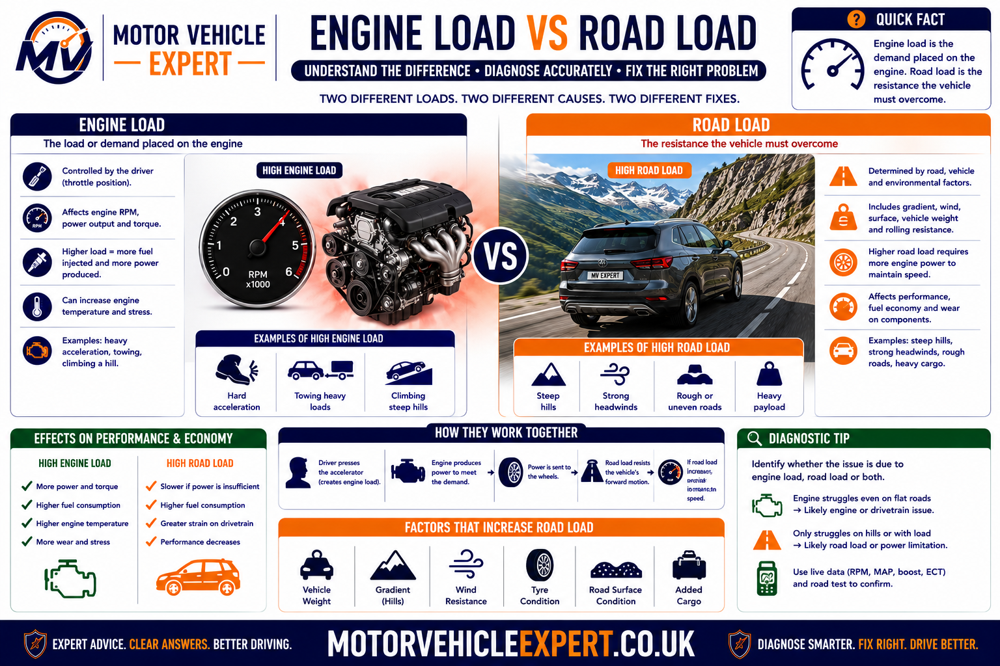
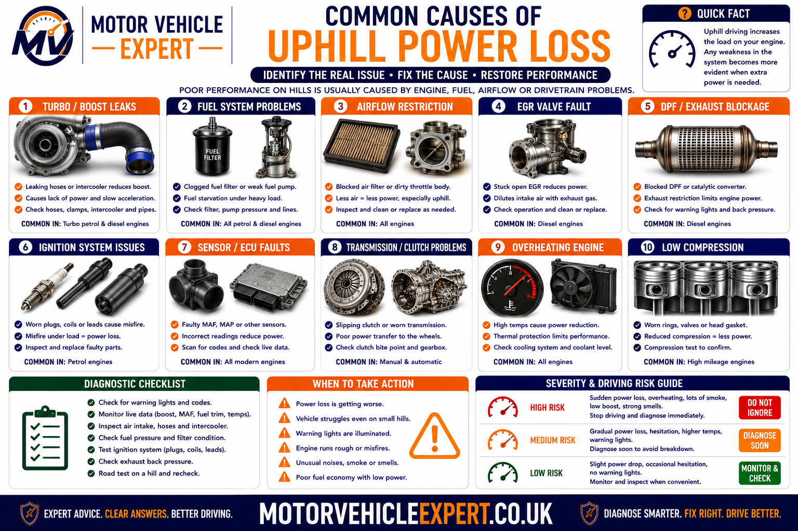
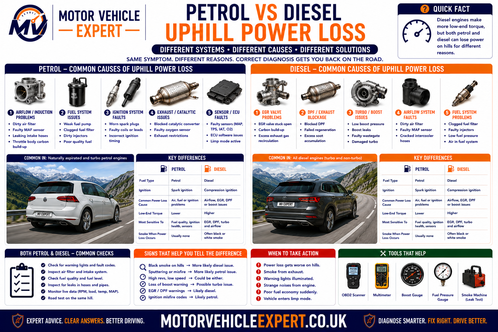
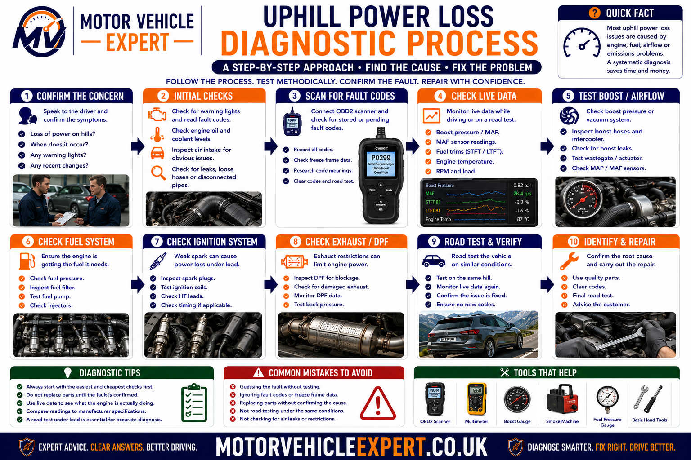
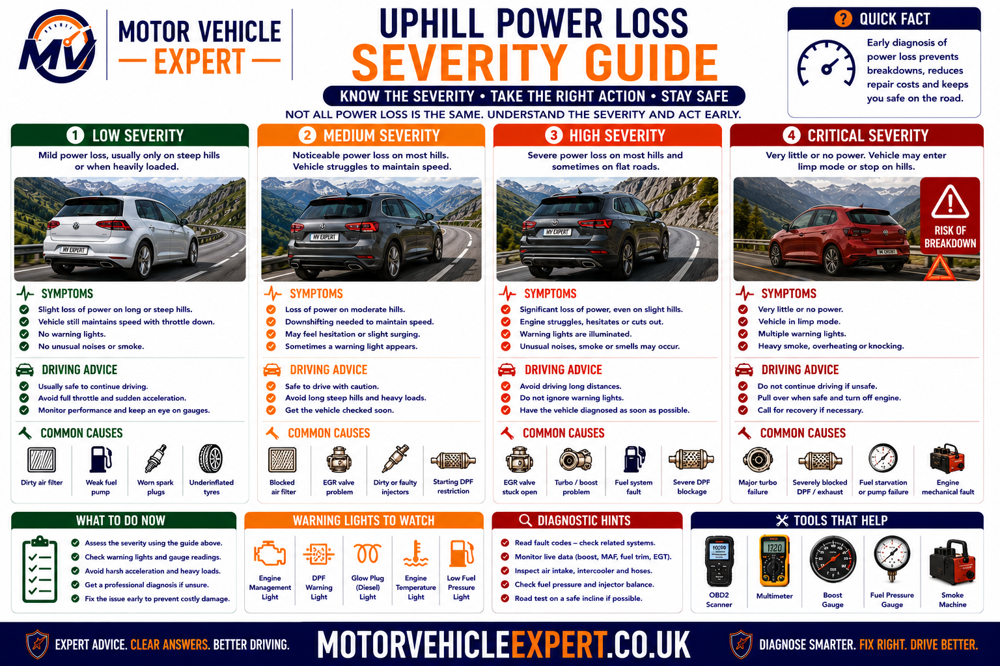
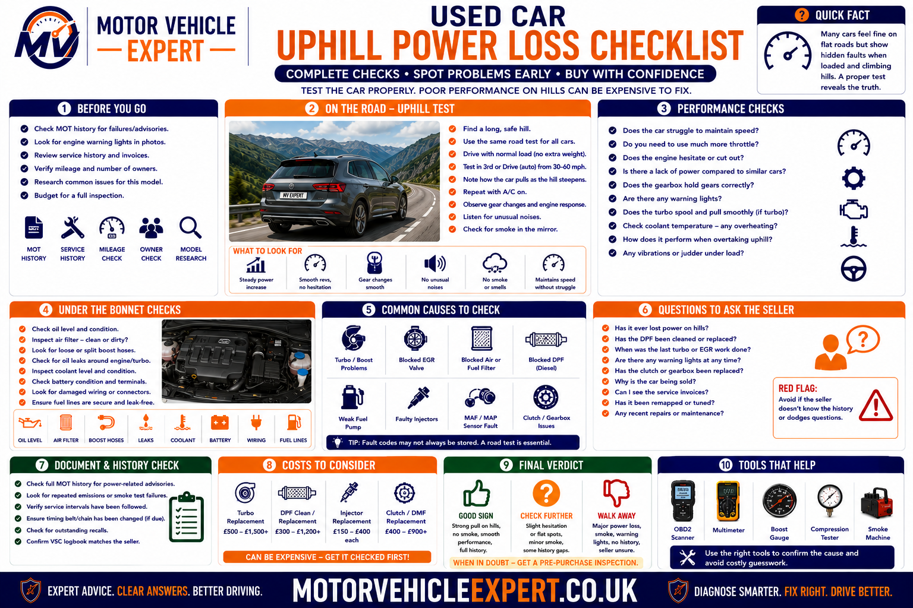

Why Does a Car Lose Power Uphill?
A car usually loses power uphill because climbing increases the torque required at the wheels. Weaknesses that are difficult to notice during gentle driving can become obvious when the engine, turbocharger, fuel system, exhaust system, clutch and transmission are placed under heavier load.
The first diagnostic step is to watch how the engine behaves. If the engine struggles to gain revs, investigate engine output, fuel delivery, airflow, turbo boost, ignition, exhaust restriction and limp mode. If engine revs rise quickly but road speed does not increase in proportion, investigate clutch or transmission slip.
Engine Struggles to Rev
More likely to involve low boost, fuel-pressure loss, ignition misfire, restricted airflow, DPF loading, EGR faults or engine protection mode.
Revs Rise but Speed Does Not
More likely to involve manual clutch slip, automatic gearbox slip, a torque-converter fault, CVT problems or another power-transfer fault.
Only Struggles on Very Steep Hills
The vehicle may simply need a lower gear, especially where the engine is small, the vehicle is heavily loaded or the gradient is unusually steep.
Hills do not usually create the fault. They expose it. The engine must produce more torque, the turbo may be commanded to generate more boost, fuel demand rises, exhaust flow increases and the clutch or transmission must transfer a heavier load.
Why Hills Expose Engine and Drivetrain Faults
Driving on a level road requires enough torque to overcome rolling resistance, aerodynamic drag and normal drivetrain losses. Driving uphill adds the force of gravity working against the vehicle, so substantially more wheel torque may be required to maintain the same road speed.
The steeper the hill, the heavier the vehicle and the higher the selected gear, the greater the load placed on the engine and drivetrain. A healthy vehicle responds by increasing throttle, airflow, fuel delivery and, where fitted, turbo boost. A weak system may no longer meet that additional demand.

A fault may remain hidden during light driving because the affected system can still meet low demand. The same system may fail to deliver enough air, fuel, boost or torque transfer during a climb.
1. More Wheel Torque Is Required
The drivetrain must produce additional force to move the vehicle against gravity.
2. Engine Airflow Increases
The throttle opens farther and turbocharged engines usually request more boost pressure.
3. Fuel Demand Rises
Pumps, filters, injectors and pressure-control systems must deliver enough fuel for the increased load.
4. Exhaust Flow Increases
DPF, catalytic-converter and exhaust restrictions become more noticeable as gas flow and temperature rise.
5. Ignition Demand Increases
Higher cylinder pressure can expose worn spark plugs, weak coils and electrical insulation faults.
6. Clutch Load Increases
A worn clutch may grip during light driving but slip when asked to transfer greater torque uphill.
7. Transmission Pressure Is Tested
Automatic clutch packs, torque converters and CVT systems must maintain their intended ratio under higher load.
8. Cooling Demand Rises
Engine, turbocharger and transmission temperatures may rise quickly during long or steep climbs.
An engine can be under heavy load at relatively low revs when the driver uses a high gear uphill. Selecting a lower gear raises engine speed but can reduce the torque demand placed on each combustion event and may help a healthy engine climb more comfortably.
Is Some Loss of Speed Normal on a Steep Hill?
Some reduction in speed can be normal, particularly in a small naturally aspirated engine, a heavily loaded vehicle or when the driver remains in too high a gear. A fault becomes more likely when performance has deteriorated, the vehicle struggles on hills it previously managed or additional symptoms appear.
Normal Uphill Behaviour
- ✓ The vehicle maintains speed after selecting a lower gear.
- ✓ Engine response remains smooth and predictable.
- ✓ No warning lights or messages appear.
- ✓ No abnormal smoke is produced.
- ✓ No burning smell or transmission flare is present.
- ✓ Performance is consistent with vehicle load and engine size.
Abnormal Uphill Behaviour
- ! The car is weaker than it used to be.
- ! Selecting a lower gear does not restore useful power.
- ! Engine speed rises without road-speed increase.
- ! The engine misfires, hesitates or surges.
- ! Smoke, warning lights or limp mode appear.
- ! The car cannot maintain a safe speed in traffic.
Vehicle Load
Passengers, luggage, towing and roof loads increase the torque required to climb.
Selected Gear
A high gear can make the engine labour. A lower ratio may move the engine into a stronger torque range.
Gradient and Altitude
Very steep gradients and high altitude can reduce performance, particularly on naturally aspirated engines.
The strongest clue is often a change. A car that has always needed a lower gear on one steep road may be healthy. A car that suddenly cannot climb the same road without smoke, misfiring or warning lights needs diagnosis.
What the Revs Tell You When Power Drops Uphill
The relationship between engine speed and road speed is one of the most useful first checks. It helps separate an engine that cannot produce enough torque from a clutch or transmission that cannot transfer that torque to the wheels.
Revs Rise, Speed Barely Changes
Strongly suggests clutch, torque-converter, automatic gearbox, CVT or another transmission slip problem.
Revs Struggle to Rise
More consistent with low engine torque caused by fuel, air, ignition, turbo, exhaust or protection-mode faults.
Revs Are Capped
May indicate engine or transmission limp mode, throttle restriction or an electronic protection strategy.
Revs Surge Repeatedly
Can indicate unstable boost control, intermittent fuelling, automatic transmission hunting or sensor errors.
Engine Shakes Under Load
More likely to involve ignition misfire, injector imbalance, compression loss or unstable combustion.
Power Returns After Restarting
Often points to a control system temporarily leaving limp mode until the fault is detected again.
| Observed behaviour | More likely system | Useful next check |
|---|---|---|
| Revs flare while speed falls | Clutch or transmission | Compare engine speed with road speed under controlled load |
| Engine will not rev freely uphill | Engine output | Check fuel, airflow, boost, ignition and exhaust data |
| Revs stop at a repeatable limit | Protection mode | Scan modules and inspect torque-limitation commands |
| Revs fluctuate with surging power | Boost, fuel or transmission control | Record live data while reproducing the surge |
| Revs drop with severe shaking | Misfire or combustion fault | Check misfire counters, ignition and injector balance |
| Vehicle slows but engine behaviour is smooth | Normal load, high gear or early-stage weakness | Select an appropriate lower gear and compare performance |
Using a high gear at low engine speed can place excessive load on the engine, clutch and transmission. Select a lower gear before applying heavy throttle, particularly on steep gradients.
Engine Power Loss or Clutch and Transmission Slip?
Drivers often describe both conditions as a loss of power, but they are mechanically different. An engine-output fault prevents enough torque being produced. A power-transfer fault allows the engine to produce torque but fails to deliver it efficiently to the road.
More Likely When
- ✓ The engine struggles to gain revs.
- ✓ Turbo boost is lower than requested.
- ✓ Fuel pressure falls under load.
- ✓ Misfiring, hesitation or smoke is present.
- ✓ Engine-management warnings appear.
- ✓ The vehicle may enter reduced-power mode.
More Likely When
- ✓ Engine revs rise rapidly.
- ✓ Road speed increases slowly.
- ✓ The fault is worse in higher gears.
- ✓ A burning clutch smell appears.
- ✓ Automatic shifts flare or engage late.
- ✓ The engine otherwise sounds smooth and responsive.
Engine Torque Problem
The engine cannot create the force required to maintain speed against the gradient.
Transmission Ratio Problem
The gearbox or clutch cannot maintain the expected relationship between engine speed and wheel speed.
Combined Fault
More than one issue may exist, such as low engine torque combined with an already worn clutch.
Low boost, restricted fuel delivery or exhaust blockage can make an automatic gearbox change gear repeatedly because the engine cannot maintain load. The gear changes may be a reaction to the power fault rather than the original cause.
Common Uphill Power-Loss Patterns
The exact conditions surrounding the fault can narrow the likely system before parts are removed. Record whether the symptom is affected by engine temperature, gear selection, throttle position, smoke, warning lights and restarting.
Only on Long Climbs
Heat-related fuel, turbo, cooling, DPF or transmission faults become more likely.
Only During Hard Acceleration
Investigate ignition strength, boost leaks, fuel pressure, clutch grip and transmission holding force.
Only When Fully Loaded
Extra passengers, luggage or towing may expose limited engine torque, clutch wear or cooling-system weakness.
Worse When Hot
Consider transmission-fluid pressure, ignition coils, fuel pumps, catalytic-converter restriction and heat-related sensor faults.
Worse When Cold
Cold-start fuelling, intake leaks, glow-system faults, sensor errors or mechanical engine condition may contribute.
Returns After Restarting
Strongly suggests a temporary protection strategy triggered by an engine, turbo, fuel, emissions or transmission fault.
Black Smoke Under Load
Often indicates too much fuel for the available air, especially on a diesel with a boost, intake, EGR or injector problem.
Burning Smell With Rising Revs
Strongly supports clutch or transmission friction overheating.
No Warning Lights
Does not rule out mechanical clutch wear, minor boost leaks, blocked filters or early fuel-pressure problems.
A vehicle can idle smoothly and pass basic workshop checks while still losing boost, fuel pressure or ignition strength uphill. Diagnosis may require safe reproduction of the complaint while recording live data.
Common Causes of a Car Losing Power Uphill
Uphill power loss can come from the engine, air-intake system, turbocharger, fuel system, ignition system, emissions equipment, clutch, transmission or drivetrain. The correct diagnosis depends on how the engine revs, whether smoke or warning lights appear and whether the fault develops gradually or suddenly.

Several faults can produce similar symptoms, which is why engine-speed behaviour, smoke, warning lights and live data must be considered together.
Turbo Boost Leak
Split hoses, loose joints or intercooler leaks reduce the boost pressure available when the engine is working hard.
Weak Fuel Delivery
Restricted filters, weak pumps, pressure-control faults or injector problems may prevent the required fuel flow uphill.
Ignition Misfire
Worn spark plugs, weak coils or electrical faults can misfire only when cylinder pressure rises under load.
Restricted Airflow
Blocked filters, collapsed intake pipes or incorrect airflow readings can limit combustion air.
DPF Restriction
Excessive soot loading or failed regeneration can increase exhaust back pressure and trigger reduced-power operation.
EGR Fault
An EGR valve stuck open or controlled incorrectly can disturb airflow and reduce torque.
Blocked Catalytic Converter
Exhaust restriction can make the engine feel increasingly strangled as load and gas flow rise.
Manual Clutch Slip
Engine revs rise without a proportional increase in road speed, especially in higher gears.
Automatic Transmission Slip
Internal clutch packs, hydraulic pressure, torque-converter or CVT faults may fail to hold the required ratio.
Limp Mode
The control system may deliberately limit torque after detecting an engine, turbo, fuel, emissions or transmission fault.
Compression Loss
Valve, piston-ring, head-gasket or timing faults can reduce the engine’s ability to produce torque under load.
Dragging Brake or Bearing
Mechanical resistance at a wheel can make the vehicle feel weak and may create heat, smell or abnormal wheel temperature.
A boost leak can imitate turbo failure, a faulty pressure sensor can imitate DPF restriction and an engine-output fault can be mistaken for clutch trouble. Test evidence should identify the failed system before expensive parts are authorised.
Turbo and Boost Faults That Cause Uphill Power Loss
Turbocharged engines rely on increased intake pressure to produce strong torque under load. Uphill driving often requests more boost, so small leaks or control problems that are difficult to notice in town can become obvious on a climb.
Split Boost Hose
A split hose may open farther under pressure, causing hissing, black smoke and weak acceleration.
Loose Hose Connection
A damaged clip, seal or joint can allow pressurised air to escape only when boost demand rises.
Leaking Intercooler
Cracked end tanks or damaged cores can reduce delivered boost and leave oil mist around the leak.
Actuator or Wastegate Fault
Incorrect vane or wastegate control can cause underboost, overboost or intermittent limp mode.
Vacuum-Control Fault
Split vacuum hoses, weak control valves or vacuum-pump problems can prevent correct turbo operation.
Turbocharger Wear
Bearing, compressor or turbine damage can reduce boost and may cause noise, oil consumption or smoke.
Common Symptoms
- ✓ Hissing or whooshing under load.
- ✓ Weak acceleration uphill.
- ✓ Black smoke on diesel vehicles.
- ✓ Oil mist around boost joints.
- ✓ Underboost fault codes.
- ✓ Power returns after restarting.
How the System Is Tested
- ✓ Requested versus actual boost pressure.
- ✓ Smoke or pressure testing of intake pipes.
- ✓ Actuator movement and control command.
- ✓ Vacuum supply and solenoid operation.
- ✓ Turbo shaft condition where accessible.
- ✓ Intercooler and hose security.
Heavy blue smoke, rapidly rising engine speed without throttle, severe turbo noise or sudden oil loss can indicate a serious turbocharger failure. Switch off safely and arrange recovery.
Intercooler and Intake Faults
The engine must receive the correct quantity of clean air. Intake restrictions, leaks after the airflow meter and intercooler damage can reduce torque or cause the control system to calculate fuelling incorrectly.
Blocked Air Filter
A heavily restricted filter can reduce airflow when the engine demands more air uphill.
Collapsed Intake Hose
A weak hose can collapse under suction and restrict airflow at higher engine load.
Intake Leak After the MAF
Unmeasured air can disturb fuelling, boost control and mixture correction.
Intercooler Contamination
Excessive oil, internal blockage or damaged fins can reduce cooling and airflow efficiency.
Throttle-Body Fault
Carbon buildup, actuator faults or incorrect position readings can restrict engine response.
Intake-Manifold Restriction
Carbon deposits, swirl-flap faults or manifold damage can reduce cylinder airflow.
A light oil film is common in many turbocharged intake systems. Heavy pooling, rapid oil consumption, blue smoke or excessive shaft movement requires further investigation.
Fuel-Delivery Faults Under Load
Fuel demand rises significantly during hill climbing. A pump, filter, pressure regulator or injector may cope at idle and light throttle but fail to maintain the required pressure or flow under heavier load.
Blocked Fuel Filter
Restricted flow may cause hesitation, weak acceleration or pressure loss during higher demand.
Weak Low-Pressure Pump
The tank or supply pump may fail to deliver enough fuel to the high-pressure system.
High-Pressure Pump Fault
Petrol direct-injection and common-rail diesel systems depend on stable high pressure under load.
Pressure-Regulator Fault
Incorrect control can cause pressure to fall, surge or fluctuate during acceleration.
Injector Flow Problem
Restricted, leaking or electrically faulty injectors can reduce cylinder output and create imbalance.
Electrical Supply Fault
Voltage drop, relays, wiring or poor grounds can weaken pump performance under demand.
| Fuel-system clue | Possible cause | Diagnostic evidence |
|---|---|---|
| Pressure falls only under load | Filter, pump or regulator restriction | Requested and actual fuel pressure diverge uphill |
| One cylinder contributes less | Injector or compression fault | Balance values, misfire data and cylinder testing |
| Power surges repeatedly | Intermittent pressure control | Pressure trace fluctuates with the symptom |
| Fault worse with low fuel level | Pickup, tank pump or contamination issue | Supply pressure changes with tank level |
| Long cranking and weak load performance | Pressure leak-down or pump wear | Slow pressure build and poor residual pressure |
Injector balance can be affected by compression, air leaks, pressure faults and mechanical engine condition. Electrical, leak-off, flow or cylinder tests may be needed before replacement.
Air Filter, MAF and MAP Sensor Faults
The engine-control unit uses airflow and pressure information to calculate fuelling, turbo control and torque output. Incorrect data can make the engine feel flat even when the mechanical turbo and fuel system are serviceable.
Restricted Air Filter
Limits the total airflow available when the engine demands more air uphill.
Contaminated MAF Sensor
Incorrect airflow readings can reduce calculated fuelling and boost response.
Faulty MAP Sensor
Incorrect manifold-pressure information can cause underboost, overboost or reduced-power operation.
Blocked Pressure Port
Carbon or oil contamination can prevent a pressure sensor reading the manifold correctly.
Wiring or Connector Fault
Intermittent signal loss may occur only as the engine moves under load or temperature changes.
Implausible Sensor Correlation
MAF, MAP, throttle and boost readings may disagree, triggering torque limitation.
A sensor can produce a believable but inaccurate reading without setting an obvious fault code. Expected airflow, pressure and throttle values should be compared under load.
Petrol Ignition Misfires Uphill
Petrol engines require a strong spark to ignite the compressed air-fuel mixture. Cylinder pressure rises during heavy load, making it harder for worn plugs, weak coils or damaged insulation to produce a reliable spark.
Worn Spark Plugs
Excessive gap, deposits or electrode wear can cause misfire during acceleration.
Weak Ignition Coil
A coil may operate at idle but break down electrically under higher cylinder pressure.
Damaged Coil Boot
Cracks, oil or moisture can allow spark energy to escape before reaching the plug.
Injector Imbalance
Incorrect fuel delivery can cause one cylinder to misfire under load.
Low Compression
Valve, ring or timing faults can reduce torque and create repeated cylinder misfires.
Incorrect Fuel Mixture
Air leaks, fuel-pressure faults or sensor errors can make the mixture too lean or rich.
Misfire Under Load
- ✓ Jerking or hesitation uphill.
- ✓ Flashing engine-management light.
- ✓ Roughness during strong acceleration.
- ✓ Fuel smell from the exhaust.
- ✓ Misfire counter increases under load.
- ✓ Performance improves at lighter throttle.
How the Fault Is Confirmed
- ✓ Cylinder-specific misfire data.
- ✓ Spark-plug inspection and gap measurement.
- ✓ Coil swap or electrical testing.
- ✓ Fuel-trim and pressure analysis.
- ✓ Injector and compression testing.
- ✓ Controlled loaded road test.
A flashing warning can indicate a severe misfire capable of overheating and damaging the catalytic converter. Reduce load and arrange diagnosis promptly.
Diesel Injector and Fuel-Pressure Faults
Common-rail diesel engines depend on accurately controlled high fuel pressure and injector delivery. Weak pressure, excessive injector return flow or poor combustion can cause dramatic torque loss under load.
Excessive Injector Leak-Off
Too much return flow can prevent the rail reaching the requested pressure.
High-Pressure Pump Wear
The pump may fail to maintain rail pressure during hard acceleration.
Fuel-Metering Valve Fault
Incorrect control of pump inlet fuel can create unstable or low rail pressure.
Rail-Pressure Sensor Fault
Incorrect feedback can trigger torque limitation or poor fuel control.
Injector Spray Problem
Poor atomisation can cause smoke, rough combustion and reduced cylinder output.
Fuel Contamination
Water, petrol contamination or debris can damage pumps and injectors.
Some high-pressure pump failures distribute metal particles through the rail, injectors, pipes and tank circuit. The full fuel system may require cleaning or replacement.
DPF Restriction and Uphill Power Loss
A diesel particulate filter traps soot from the exhaust. Excessive loading, repeated failed regenerations, ash accumulation or sensor faults can increase exhaust back pressure and reduce performance.
High Soot Loading
Short journeys, low exhaust temperature or unresolved engine faults can prevent successful regeneration.
Ash Accumulation
Non-combustible ash remains after regeneration and may require specialist cleaning or replacement.
Differential-Pressure Fault
Blocked hoses or a faulty sensor can report incorrect filter restriction.
Exhaust-Temperature Sensor
Incorrect temperature data can prevent or interrupt regeneration.
Underlying Engine Fault
Boost leaks, injector faults, EGR problems and oil burning can overload the filter.
Reduced-Power Mode
The control system may limit torque to protect the engine and emissions components.
| DPF condition | Likely action | Important check |
|---|---|---|
| Moderate soot loading with no major fault | Controlled regeneration may be appropriate | Confirm oil level and safe regeneration conditions |
| Repeated failed regenerations | Diagnose underlying engine or sensor fault | Do not keep forcing regenerations |
| High ash loading | Specialist cleaning or replacement | Ash cannot be burned away |
| Implausible pressure reading | Test sensor and hoses | Do not condemn the filter from one reading |
| Damaged or melted filter | Replacement and root-cause repair | Check injectors, turbo and temperature control |
Regeneration cannot repair ash saturation, cracked substrates, faulty sensors, injector faults or excessive oil contamination. The cause of repeated loading must be identified.
EGR Faults and Weak Uphill Acceleration
The EGR system routes a controlled amount of exhaust gas back into the intake under selected conditions. If the valve sticks open or airflow calculation becomes incorrect, the engine may lose torque, smoke or hesitate under load.
EGR Stuck Open
Excess exhaust gas reduces the oxygen available for combustion when the engine needs power.
EGR Stuck Closed
May trigger emissions faults and incorrect control responses, depending on the system.
Carbon-Restricted Passage
Deposits can restrict flow or prevent the valve moving through its full range.
Position-Sensor Fault
The control unit may receive incorrect feedback about actual valve position.
EGR Cooler Fault
Internal leakage or restriction can affect coolant, intake and exhaust operation.
Airflow Correlation Fault
MAF and EGR readings may not respond as expected when the valve is commanded.
Cleaning may help where deposits restrict an otherwise healthy valve, but electrical, mechanical and cooler faults require the appropriate repair.
Blocked Catalytic Converter or Exhaust System
Exhaust gases must leave the engine freely. A collapsed catalytic converter, damaged silencer, crushed pipe or blocked filter can create back pressure that becomes more restrictive as load and exhaust flow increase.
Collapsed Catalyst Substrate
Internal material can melt, break apart or block the gas path.
Oil or Fuel Contamination
Misfires, oil burning or rich running can overheat and damage the catalyst.
Crushed Exhaust Pipe
Impact damage can restrict the system even when no warning light appears.
Failed Silencer Internals
Broken baffles can move and partially block exhaust flow.
Excessive Back Pressure
The engine may feel increasingly unable to breathe as revs and load rise.
Abnormal Heat
A restricted or overloaded catalyst may become excessively hot.
Replacing a catalytic converter without correcting a severe misfire, injector fault or oil-burning problem can quickly damage the replacement unit.
Clutch Slip That Becomes Worse Uphill
A worn or contaminated clutch may transfer enough torque during gentle driving but begin slipping as load rises. Hills, higher gears, towing and additional vehicle weight make the symptom more obvious.
More Likely When
- ✓ Engine revs rise quickly.
- ✓ Road speed increases slowly.
- ✓ The fault is worse in higher gears.
- ✓ A burning friction smell develops.
- ✓ The bite point feels unusually high.
- ✓ Towing or carrying weight worsens the symptom.
What Else Must Be Checked
- ✓ Engine or gearbox oil contamination.
- ✓ Pressure-plate clamping force.
- ✓ Hydraulic release operation.
- ✓ Cable adjustment where applicable.
- ✓ Dual-mass flywheel condition.
- ✓ Engine and gearbox mountings.
Each slip event generates friction heat and can damage the clutch, pressure plate and flywheel. Once confirmed, arrange repair rather than continuing hard uphill tests.
Automatic Gearbox and CVT Slip Uphill
Automatic transmissions must maintain hydraulic pressure and friction holding force under increased load. Worn clutch packs, torque-converter problems, valve-body faults or CVT pressure loss may become more obvious on hills.
Gear Flare
Revs rise during or after a gear change before road speed catches up.
Delayed Engagement
Drive or Reverse takes too long to engage or applies harshly.
Torque-Converter Slip
Weak pull-away, shudder or excessive cruising revs may be present.
CVT Pressure Fault
Belt or pulley grip may become unstable under higher torque.
Dual-Clutch Overheating
Clutch packs or actuators may overheat during slow steep climbs.
Transmission Protection Mode
The gearbox may hold one ratio or limit torque after detecting a fault.
A healthy CVT may hold engine speed steady while road speed builds. Genuine slip is more likely where acceleration is weak, the ratio becomes unstable, warning messages appear or engagement is delayed.
Why Limp Mode Often Appears Uphill
Limp mode is a protection strategy. The engine or transmission control unit reduces torque after detecting a fault that could damage the engine, turbocharger, emissions system or gearbox.
Underboost or Overboost
Turbo pressure outside the permitted range can trigger power limitation.
Fuel-Pressure Deviation
Requested and actual pressure may separate under load.
DPF or EGR Fault
Emissions-system faults can restrict torque to protect components.
Excessive Temperature
Engine, exhaust or transmission temperature may trigger a protection strategy.
Sensor Implausibility
Conflicting airflow, pressure or throttle data can reduce output.
Transmission Ratio Fault
Slip or incorrect ratio detection may place the gearbox into a limited mode.
Read stored codes, freeze-frame data and live readings before disconnecting the battery or clearing faults. Restarting may hide the symptom temporarily without repairing the cause.
Smoke Colours During Uphill Power Loss
Heavy load increases fuelling, boost and exhaust temperature, so smoke may become more visible uphill. Colour and timing can help identify the affected system.
Black Smoke
Usually indicates excessive fuel relative to air, particularly on diesel engines with boost, intake, EGR or injector faults.
Blue Smoke
Suggests oil burning from turbocharger seals, piston rings, valve guides or another internal source.
Persistent White Smoke
May indicate unburned fuel, coolant entry or poor combustion, depending on temperature and engine type.
Stop driving if smoke is dense, engine temperature rises, oil pressure drops, the engine runs uncontrollably or a severe misfire develops.
Petrol vs Diesel Uphill Power Loss
Petrol and diesel engines can share boost, airflow, fuel and mechanical faults, but their most common load-related problems and diagnostic evidence are not identical.

Petrol diagnosis often prioritises ignition strength and mixture control, while diesel diagnosis commonly includes rail pressure, boost, injectors, EGR and DPF loading.
Common Uphill Faults
- ✓ Worn spark plugs.
- ✓ Weak ignition coils.
- ✓ Low fuel pressure.
- ✓ MAF, MAP or throttle faults.
- ✓ Turbo boost leaks where fitted.
- ✓ Catalytic-converter restriction.
- ✓ Lean or rich mixture faults.
Common Uphill Faults
- ✓ Turbo and intercooler leaks.
- ✓ Low rail pressure.
- ✓ Injector leak-off or imbalance.
- ✓ DPF loading or restriction.
- ✓ EGR and airflow faults.
- ✓ Black smoke under load.
- ✓ Emissions-related limp mode.
| Diagnostic area | Petrol priority | Diesel priority |
|---|---|---|
| Ignition | Spark plugs, coils and misfire counters | Not normally spark ignition |
| Fuel system | Low and high pressure, trims and injectors | Rail pressure, leak-off and injector balance |
| Turbo system | Where turbocharged | Common diagnostic priority |
| Exhaust restriction | Catalytic converter | DPF, catalyst and exhaust pressure |
| Smoke clue | Blue, black or white depending on fault | Black smoke strongly supports air-fuel imbalance |
| Common live data | Fuel trims, ignition timing and misfires | Rail pressure, boost, airflow and DPF pressure |
Both petrol and diesel faults should be confirmed using symptom reproduction, visual checks, module data and system-specific testing rather than assumptions based only on fuel type.
How a Garage Diagnoses Uphill Power Loss
A professional diagnosis should reproduce the complaint safely, establish whether the engine is failing to produce torque or the drivetrain is failing to transfer it, and then test the relevant system under load. Replacing parts from a fault code or symptom description alone can lead to unnecessary expense.
Uphill faults often require more than an idle inspection. A vehicle may appear healthy in the workshop but lose boost, fuel pressure, ignition strength or transmission holding force only when road load increases. Live data recorded during a controlled road test can therefore be essential.

The process begins by confirming the symptom and ends by repeating the original hill or load condition after repair to prove that normal torque has been restored.
1. Confirm the Exact Complaint
Record the gradient, selected gear, engine temperature, vehicle load and throttle position when the problem appears.
2. Separate Engine and Drivetrain Faults
Compare engine-speed behaviour with road-speed response before choosing the system to test.
3. Scan All Relevant Modules
Read engine, transmission, emissions and four-wheel-drive control units for stored, pending and historic faults.
4. Inspect Basic Condition
Check filters, hoses, wiring, fluid leakage, intake joints, driveshafts, mountings and visible exhaust damage.
5. Reproduce the Fault Safely
Use a suitable road, rolling road or controlled loading method without repeatedly overheating the vehicle.
6. Record Live Data
Compare requested and actual boost, fuel pressure, airflow, throttle, gear ratio, misfires and emissions-system readings.
7. Perform System-Specific Tests
Pressure-test the intake, check ignition, measure fuel delivery, inspect DPF pressure or confirm clutch and transmission slip.
8. Verify the Completed Repair
Repeat the original load condition and confirm that warning lights, smoke, hesitation and torque loss no longer occur.
Revving the engine without road load may not expose low boost, fuel-pressure loss, clutch slip or transmission ratio problems. The test method should safely reproduce the conditions described by the driver.
What a Mechanic Checks When a Car Struggles Uphill
The inspection should cover the complete engine-load and power-transfer system. The correct test order prevents a simple intake leak, filter restriction or wiring fault being mistaken for a failed turbocharger, DPF, clutch or gearbox.
Service Condition
Check engine oil, air filter, fuel filter, spark plugs and overdue maintenance that may affect load performance.
Intake and Boost System
Inspect hoses, clips, intercooler, turbo controls, vacuum pipes and oil contamination.
Fuel Delivery
Compare requested and actual pressure and check pump supply, filter restriction, regulators and injectors.
Ignition and Combustion
Inspect plugs, coils, injectors, compression and cylinder contribution where misfiring is suspected.
Emissions System
Check DPF loading, differential pressure, EGR operation, catalyst restriction and exhaust-temperature data.
Clutch and Transmission
Compare engine and road speed, assess clutch grip and inspect automatic transmission ratio and temperature data.
Drivetrain Resistance
Check dragging brakes, wheel-bearing heat, driveshafts, differentials and four-wheel-drive components.
Cooling Performance
Confirm that engine and transmission temperatures remain within their expected range during sustained load.
Electrical Supply
Inspect battery voltage, charging performance, grounds, connectors and wiring under heat and engine movement.
Physical Checks
- ✓ Split or oil-stained boost hoses.
- ✓ Loose intake and intercooler connections.
- ✓ Restricted filters.
- ✓ Fuel, oil and coolant leakage.
- ✓ Exhaust impact damage or collapse.
- ✓ Overheated wheels or brakes.
- ✓ Damaged mountings and driveshafts.
Diagnostic Checks
- ✓ Stored and pending fault codes.
- ✓ Freeze-frame operating conditions.
- ✓ Requested and actual engine torque.
- ✓ Boost and airflow readings.
- ✓ Fuel pressure and injector data.
- ✓ DPF pressure and regeneration history.
- ✓ Transmission ratio and slip values.
A strong diagnosis should identify what was measured, what the expected value was and how the result proves the recommended repair.
Road-Test and Live-Data Checks
Live data allows the technician to compare what the control unit is requesting with what the engine and transmission are actually delivering. The most useful values depend on the engine and transmission design.
Requested vs Actual Boost
A large underboost difference can support a leak, control, actuator or turbocharger fault.
Fuel Pressure Under Load
Falling pressure can expose filter, pump, regulator, injector or electrical-supply problems.
Airflow Reading
Airflow should rise predictably with engine speed, load and EGR operation.
Throttle and Torque Request
The data can show whether the driver is requesting power and whether the control system is limiting it.
Misfire Counters
Cylinder-specific counts can increase only during strong acceleration or hill climbing.
Fuel Trims
Petrol fuel corrections can reveal lean, rich or airflow measurement problems.
DPF Differential Pressure
Pressure should be assessed against engine speed, gas flow and filter loading rather than as an isolated number.
EGR Command and Position
Actual EGR behaviour should follow the commanded state and produce the expected airflow response.
Transmission Ratio
Engine, input, output and wheel speeds can confirm whether the selected ratio is holding under load.
| Live-data pattern | Possible fault | Next diagnostic step |
|---|---|---|
| Actual boost remains below requested boost | Boost leak, actuator, control or turbo fault | Pressure-test the intake and verify control operation |
| Fuel pressure drops as load rises | Filter, pump, regulator or injector issue | Test supply pressure, flow and electrical feed |
| One-cylinder misfire count rises rapidly | Ignition, injector or compression fault | Perform cylinder-specific testing |
| DPF pressure is excessive for gas flow | Filter restriction or pressure-sensing fault | Inspect sensor hoses and confirm filter condition |
| Torque request is reduced by the control unit | Limp mode or component protection | Identify the fault triggering torque limitation |
| Engine speed rises while output speed lags | Clutch or transmission slip | Confirm mechanical or hydraulic holding failure |
Values should be recorded before, during and after the symptom. The relationship between several readings is often more useful than one figure viewed in isolation.
How Serious Is Uphill Power Loss?
Severity depends on whether the vehicle can maintain a safe speed, how quickly the problem is worsening and whether smoke, misfiring, overheating, transmission slip or warning messages are present.

Mild deterioration may allow a planned garage visit, while severe misfire, smoke, overheating or unsafe acceleration requires immediate action.
Needs a Lower Gear
Lower SeverityPerformance is smooth, predictable and consistent with the vehicle’s engine size, load and gradient.
Noticeably Weaker Than Before
Moderate SeverityThe vehicle remains driveable but struggles on hills it previously managed normally.
Warnings, Smoke or Slip
High SeverityLimp mode, misfiring, black smoke, clutch smell or transmission flare indicates a significant fault.
Cannot Maintain Safe Speed
UrgentHeavy smoke, severe overheating, oil-pressure warning, major misfire or almost no drive requires recovery.
| Condition | Risk level | Recommended response |
|---|---|---|
| Vehicle is smooth but needs a lower gear | Lower | Use the correct gear and monitor for deterioration |
| Performance is gradually becoming weaker | Moderate | Arrange diagnosis before the fault worsens |
| Power loss is accompanied by a warning light | High | Limit use and read the fault evidence promptly |
| Revs flare with a burning clutch smell | High | Avoid further hill testing and arrange repair |
| Heavy smoke or severe misfire develops | Urgent | Stop safely and arrange recovery |
| Temperature or oil-pressure warning appears | Urgent | Switch off as soon as it is safe |
A car may eventually climb the hill but still be unsafe if it cannot accelerate predictably at a junction, roundabout or motorway slip road.
Can You Keep Driving When the Car Loses Power Uphill?
A short, careful journey to a nearby garage may be possible where the symptom is mild, stable and not accompanied by warnings, smoke, misfiring, overheating or slip. Recovery is safer where the vehicle cannot accelerate predictably or the fault is worsening quickly.
Do Not Continue Driving If...
- ! The vehicle cannot maintain a safe road speed.
- ! The engine misfires severely.
- ! Heavy black, blue or white smoke appears.
- ! Engine temperature rises abnormally.
- ! An oil-pressure warning appears.
- ! A strong burning clutch smell develops.
- ! The transmission slips or loses drive.
- ! Turbo noise becomes severe.
A Short Journey May Be Possible If...
- ✓ Power loss is mild and predictable.
- ✓ The engine remains smooth.
- ✓ No warning message appears.
- ✓ No smoke or burning smell is present.
- ✓ Engine temperature remains normal.
- ✓ The vehicle is safe in local traffic.
- ✓ The route avoids steep hills and high-speed roads.
- ✓ The garage is nearby and expecting the vehicle.
Additional load increases fuel, boost, cooling, clutch and transmission demand. A marginal fault can become a complete breakdown when the vehicle is repeatedly forced to climb.
Labouring the engine in a high gear can increase cylinder pressure, heat and drivetrain load. A lower gear can allow the engine to operate in a stronger and safer speed range.
Can Uphill Power Loss Fail an MOT?
Uphill power loss is not itself a standalone MOT failure. The ordinary UK car MOT does not assess the general performance or condition of the engine, clutch or gearbox.
The fault may nevertheless be connected to defects that are part of the test. Applicable warning lights, excessive petrol emissions, diesel smoke, serious fluid leakage, unsafe driveshaft components or insecure engine and gearbox mountings may affect the result.
Power Loss Alone
Not a Direct MOT ItemA car may pass its MOT while still having poor boost, weak fuel delivery, clutch slip or transmission problems.
Engine Warning Light
May Affect the TestAn applicable malfunction indicator lamp can cause failure independently of the uphill symptom.
Petrol Emissions
Can Cause FailureMisfire, mixture, catalyst and sensor faults may produce excessive emissions.
Diesel Smoke
Can Cause FailureHeavy smoke linked to boost, EGR, injector or DPF faults may affect the smoke test.
Serious Fluid Leak
May Affect the ResultSignificant oil, fuel, coolant or transmission-fluid leakage can create safety and environmental concerns.
Drivetrain Defect
May Cause FailureUnsafe driveshaft, coupling or mounting defects can be relevant to the inspection.
Passing the MOT does not prove that the turbocharger, fuel system, clutch, gearbox, DPF or engine is mechanically healthy. The driver remains responsible for keeping the vehicle roadworthy between tests.
Typical Repair Costs When a Car Loses Power Uphill
Repair costs vary widely because uphill power loss can come from a simple blocked filter, split boost hose or worn spark plug, or from a failed turbocharger, injector, DPF, clutch or transmission. These broad UK price ranges are intended for budgeting and comparison, not as fixed quotations.
Diagnosis should come before replacement. Several expensive components can produce similar symptoms, and a written quotation should explain the failed test, required supporting work, parts quality, labour, VAT and warranty.
Professional Diagnosis
£60–£180May include module scanning, freeze-frame review, visual checks, a controlled loaded road test and live-data analysis.
Air-Filter Replacement
£30–£90Appropriate where the filter is overdue, visibly restricted or reducing airflow under load.
Fuel-Filter Replacement
£50–£180Cost depends on filter location, priming procedure and whether the fuel system requires bleeding or diagnostic resetting.
Spark-Plug Replacement
£70–£250+Price varies with engine layout, plug type, cylinder count and access beneath intake or engine-cover components.
Ignition-Coil Replacement
£90–£350+Covers one or more coils depending on engine design, diagnostic evidence and whether plugs should be renewed at the same time.
Boost Hose or Joint Repair
£80–£350+Includes selected hoses, clips, seals or joints. Intercooler removal or difficult access can increase labour.
MAF or MAP Sensor
£120–£400+Replacement should follow wiring, connector, pressure-port and plausibility checks rather than symptoms alone.
Throttle-Body Repair or Replacement
£180–£700+May include cleaning, replacement, calibration, adaptation and investigation of wiring or control faults.
EGR Cleaning
£120–£350+Suitable only where deposits restrict an otherwise serviceable valve and cooler system.
EGR Valve Replacement
£300–£1,000+Cost varies with valve access, cooler integration, coding and whether intake deposits require additional cleaning.
DPF Diagnosis or Regeneration
£100–£300+May include pressure checks, sensor testing and a controlled regeneration where conditions are safe and appropriate.
Specialist DPF Cleaning
£250–£600+Usually involves removing the filter for off-car cleaning and confirming that it is structurally serviceable.
Replacement DPF
£700–£2,500+Genuine units, integrated catalysts, sensor replacement and vehicle access can increase the final cost substantially.
Low-Pressure Fuel Pump
£250–£800+Price depends on whether the pump is external, tank-mounted or supplied as part of a complete sender assembly.
High-Pressure Fuel Pump
£700–£2,000+Metal contamination can require additional pipes, injectors, rail cleaning and tank-system work.
Petrol Injector Replacement
£180–£600+ eachDirect-injection systems may require coding, seals, specialist removal and replacement of high-pressure components.
Diesel Injector Repair or Replacement
£250–£700+ eachIncludes broad costs for reconditioned or new injectors, coding, seals and removal where corrosion is not severe.
Turbo Actuator or Control Repair
£250–£900+May involve a vacuum solenoid, electronic actuator, wiring, calibration or control-component replacement.
Turbocharger Replacement
£800–£2,200+A complete repair may also require oil-feed work, intercooler cleaning, oil and filter replacement and correction of the original failure cause.
Catalytic-Converter Replacement
£500–£2,000+Cost depends on vehicle type, catalyst location, precious-metal content and whether the unit is integrated with the manifold.
Clutch Replacement
£550–£1,300+Includes broad parts and labour estimates for a clutch kit, subject to vehicle layout and access.
Clutch With Dual-Mass Flywheel
£900–£2,000+Required where clutch wear is confirmed and the DMF is outside its permitted condition or movement limits.
Gearbox, CVT or DCT Repair
£700–£3,500+The final cost depends on whether the fault involves fluid service, solenoids, valve body, clutch packs, mechatronics, CVT components or complete internal rebuilding.
Vehicle age, engine type, transmission design, regional labour rates, part quality and supporting damage can move the final quotation outside these ranges. Always obtain a vehicle-specific written estimate.
Uphill Power-Loss Repair Cost Comparison
Similar symptoms can result in very different repair bills. This comparison shows why confirming the root cause before authorising parts is essential.
| Repair | Typical UK range | Usually needed when | Important consideration |
|---|---|---|---|
| Professional diagnosis | £60–£180 | The failed system has not been confirmed | Should reproduce the complaint under load |
| Air filter | £30–£90 | The filter is overdue or restricted | Check the wider intake system |
| Fuel filter | £50–£180 | Fuel flow is restricted or servicing is overdue | Confirm pressure recovery after replacement |
| Spark plugs | £70–£250+ | Wear or fouling causes load-related misfire | Inspect coils and mixture control |
| Ignition coil | £90–£350+ | Electrical breakdown occurs under load | Confirm the affected cylinder |
| Boost hose or joint | £80–£350+ | Pressure testing identifies leakage | Inspect intercooler and connected hoses |
| MAF or MAP sensor | £120–£400+ | Sensor response or wiring is proven faulty | Clean pressure ports and verify wiring first |
| EGR cleaning | £120–£350+ | Deposits restrict an otherwise serviceable valve | Cleaning cannot repair motor or sensor failure |
| EGR replacement | £300–£1,000+ | The valve, cooler or actuator has failed | Check intake contamination and airflow data |
| DPF regeneration or diagnosis | £100–£300+ | Soot loading is manageable and conditions are safe | Identify why regeneration failed |
| Specialist DPF cleaning | £250–£600+ | The filter is serviceable but heavily loaded | Ash and structural damage must be assessed |
| Replacement DPF | £700–£2,500+ | The filter is damaged, melted or beyond cleaning | Repair the root cause before installation |
| Fuel pump | £250–£2,000+ | Supply or rail pressure cannot be maintained | Check for contamination and electrical faults |
| Injector repair or replacement | £180–£700+ each | Flow, electrical or leak-off testing confirms failure | Coding and seized removal can add cost |
| Turbo control or actuator | £250–£900+ | Boost control fails but the turbo core is serviceable | Calibration may be required |
| Turbocharger replacement | £800–£2,200+ | Mechanical turbo failure is proven | Check oil supply and intake contamination |
| Catalytic converter | £500–£2,000+ | Exhaust restriction or substrate damage is confirmed | Repair misfire or oil-burning causes first |
| Clutch replacement | £550–£1,300+ | Revs rise without matching road speed | Inspect seals, hydraulics and flywheel |
| Clutch and DMF | £900–£2,000+ | Both clutch and flywheel are outside specification | Do not replace a serviceable flywheel automatically |
| Automatic, CVT or DCT repair | £700–£3,500+ | Ratio, pressure or internal slip is confirmed | Use a suitable transmission specialist |
Replacing filters or sensors without evidence can waste money, while replacing a turbocharger, DPF or gearbox without confirming supporting faults can result in repeated failure.
What Affects Uphill Power-Loss Repair Costs?
The final price depends on more than the headline component. Diagnostic complexity, engine design, access, programming, contamination and supporting damage can all change the finished repair cost.
Petrol or Diesel Engine
Diesel high-pressure fuel, DPF and injector systems can require different tools and more expensive components.
Turbocharged or Naturally Aspirated
Turbocharged vehicles add boost pipes, intercoolers, actuators, oil feeds and pressure-control systems.
Vehicle Access
Tight engine bays, subframes, exhaust removal and hidden components increase labour time.
Diagnostic Complexity
Intermittent or load-only faults may require several road tests, data logging and specialist pressure tests.
Part Quality
Genuine, original-equipment and budget aftermarket parts can differ significantly in price and warranty.
Programming and Coding
Injectors, throttle bodies, actuators and transmission modules may require coding or adaptation.
DPF Design
Integrated catalyst assemblies, sensor access and replacement procedures can greatly affect DPF costs.
Injector Removal Difficulty
Carbon buildup and corrosion can make diesel injectors difficult to remove without specialist tools.
Turbo Supporting Work
Oil-feed pipes, sump cleaning, intercooler flushing and oil changes may be required with turbo replacement.
Clutch and Flywheel Condition
A serviceable flywheel reduces cost, while heat damage, excessive movement or contamination increases it.
Transmission Design
Conventional automatics, CVTs and dual-clutch systems have different fluids, parts and specialist requirements.
Dealer or Independent Specialist
Labour rates, diagnostic equipment, parts policy and warranty terms differ between repairers.
Common Cost Multipliers
- ✓ Multiple injectors requiring replacement.
- ✓ Metal contamination in the fuel system.
- ✓ Integrated DPF and catalyst assemblies.
- ✓ Turbo oil starvation or contamination.
- ✓ Difficult sensor or EGR access.
- ✓ Internal engine compression loss.
Common Cost Multipliers
- ✓ Dual-mass flywheel replacement.
- ✓ Concentric slave-cylinder replacement.
- ✓ Engine or gearbox oil-seal repair.
- ✓ Four-wheel-drive transmission layout.
- ✓ Mechatronic programming and adaptation.
- ✓ Internal transmission debris or cooler contamination.
One estimate may include only the main component while another includes diagnostic work, seals, fluids, coding, cleaning and warranty. The total finished repair is the figure that matters.
Should the Fault Be Cleaned, Repaired or Replaced?
Cleaning is appropriate only where contamination or deposits are the confirmed problem and the component remains structurally and electrically serviceable. Mechanical, electrical and internal failures require repair or replacement.
Cleaning May Be Suitable
Appropriate for selected EGR deposits, intake contamination, serviceable DPF loading and blocked sensor passages.
Repair May Be Suitable
Appropriate for boost hoses, wiring, connectors, actuators, valve bodies, seals and selected fuel-system components.
Replacement May Be Required
Necessary where a turbo, catalyst, DPF, clutch, injector, pump or transmission component is damaged beyond reliable repair.
Suitable Conditions
- ✓ Deposits are the confirmed restriction.
- ✓ The component moves and responds correctly.
- ✓ No structural damage is present.
- ✓ Electrical tests are satisfactory.
- ✓ The contamination source has been corrected.
- ✓ The repair can be verified afterwards.
Replacement Conditions
- ✓ Internal mechanical damage is confirmed.
- ✓ The catalyst or DPF substrate is melted or cracked.
- ✓ A sensor or actuator fails electrical testing.
- ✓ Turbo bearings or wheels are damaged.
- ✓ Clutch friction components are worn or contaminated.
- ✓ Repair cannot provide dependable service life.
| Component | Cleaning may help when | Replacement is more likely when |
|---|---|---|
| EGR valve | Deposits restrict an otherwise functioning valve | Motor, position sensor or mechanism has failed |
| DPF | Soot or removable ash loading is confirmed | The substrate is cracked, melted or beyond limits |
| MAF or MAP sensor | Approved cleaning removes surface contamination | Signal, wiring or internal electronics fail testing |
| Turbocharger | External control or pipe faults are the cause | Bearings, shaft, compressor or turbine are damaged |
| Catalytic converter | Very limited scope for reliable cleaning | Substrate restriction or structural damage is proven |
| Clutch | Cleaning is not a dependable friction repair | Wear, glazing, heat damage or oil contamination exists |
Additives, forced regenerations and intake cleaning cannot repair broken actuators, failed sensors, worn clutch plates, damaged turbochargers or mechanically collapsed exhaust components.
How to Reduce Uphill Power-Loss Repair Costs
The safest way to reduce costs is to diagnose the problem early, preserve the fault evidence and repair the root cause before heat, contamination or repeated overload damages additional components.
Diagnose Before Replacing
Confirm whether the problem is air, fuel, ignition, emissions, clutch or transmission related before ordering components.
Keep Fault Evidence
Record warning messages and read codes and freeze-frame data before clearing or disconnecting the battery.
Repair Boost Leaks Early
A small hose leak can cause smoke, overworking and repeated limp mode if ignored.
Replace Overdue Filters
Air and fuel filters are comparatively low-cost items that can restrict performance when neglected.
Correct the Failure Cause
Repair misfires, oil burning, fuel contamination or control faults before installing new catalysts, DPFs or turbos.
Use Correct Specifications
Use the required engine oil, filters, spark plugs, fuel-system parts and transmission fluid.
Compare Specialist Quotes
Obtain written quotations from garages experienced with the vehicle’s turbo, diesel, DPF or transmission system.
Check Warranty Scope
Confirm whether labour, coding, fluid, recovery and repeated failure are included.
Avoid Repeated Hill Testing
Continued high-load testing can overheat clutches, transmissions, catalysts, DPFs and turbochargers.
Worth Paying For
- ✓ A controlled loaded diagnosis.
- ✓ Intake and fuel-pressure testing.
- ✓ Quality replacement components.
- ✓ Correct coding and adaptation.
- ✓ Supporting seals, filters and fluids.
- ✓ A clear parts-and-labour warranty.
Avoid These Shortcuts
- ! Replacing a turbo from an underboost code alone.
- ! Repeatedly forcing DPF regenerations.
- ! Fitting injectors without pressure and balance tests.
- ! Cleaning a mechanically failed EGR valve.
- ! Ignoring oil contamination during clutch repair.
- ! Choosing a major repair without a written warranty.
A complete quotation should state diagnosis, parts, labour, VAT, filters, fluids, programming, cleaning, supporting repairs and warranty. This allows repair options to be compared fairly.
Checking a Used Car That Loses Power Uphill
Uphill power loss can expose anything from overdue servicing to an expensive turbocharger, fuel-system, DPF, clutch or transmission fault. A short drive around level streets may not reproduce the problem, so the vehicle should be assessed under realistic but safe load before purchase.
Begin from a genuine cold start, allow the engine and transmission to reach operating temperature and compare performance on level roads and a suitable gradient. Watch the rev counter, road speed, warning lights, smoke and gear behaviour rather than relying only on how fast the vehicle feels.

A vehicle that performs well when cold may still develop low fuel pressure, boost faults, DPF restriction or transmission slip after warming up.
Walk Away If...
- ! The vehicle cannot maintain a safe speed uphill.
- ! The engine-management light flashes.
- ! Heavy black, blue or white smoke appears.
- ! Engine revs rise without matching road speed.
- ! A strong burning clutch smell develops.
- ! The vehicle repeatedly enters limp mode.
- ! Turbo, gearbox or fuel-system noises are severe.
- ! The seller refuses an independent inspection.
Consider Buying Only If...
- ✓ The exact failed component has been confirmed.
- ✓ A written repair quotation is available.
- ✓ No major supporting damage is present.
- ✓ The repair cost is reflected in the purchase price.
- ✓ Service history supports the vehicle’s mileage.
- ✓ The engine, clutch and transmission are otherwise sound.
- ✓ A specialist can inspect the vehicle before purchase.
Good Signs
- ✓ Power delivery remains smooth on a suitable hill.
- ✓ Selecting a lower gear restores expected performance.
- ✓ No warning lights or reduced-power messages appear.
- ✓ No abnormal exhaust smoke is produced.
- ✓ Engine revs and road speed rise proportionally.
- ✓ Turbo and transmission servicing is documented.
- ✓ No relevant diagnostic faults return.
Turbo and Intake History
Look for invoices covering boost hoses, intercooler work, actuator repairs, turbo replacement and oil-feed maintenance.
Fuel-System History
Check fuel-filter changes, injector work, pump repairs and any evidence of fuel contamination.
DPF and EGR History
Repeated forced regenerations without a documented root-cause repair should be treated cautiously.
Clutch and Flywheel History
Confirm which parts were replaced, who completed the work and whether oil leaks or hydraulic components were addressed.
Transmission History
Look for correct fluid servicing, valve-body work, software updates, clutch adaptations and repair warranties.
Diagnostic Evidence
Recent code clearing without supporting invoices may indicate an unresolved intermittent or load-related fault.
A vehicle can have a current MOT while suffering from low turbo boost, fuel-pressure loss, clutch slip, DPF loading or automatic transmission weakness. A mechanical road test and diagnostic inspection remain essential.
Cold-Start Checks Before the Road Test
A genuine cold start can reveal glow-system faults, injector imbalance, timing problems, oil-burning smoke and warning lights that may disappear after the engine warms up. Ask the seller not to start the vehicle before the inspection.
1. Check Engine Temperature
Confirm that the engine is genuinely cold rather than recently warmed to hide difficult starting or smoke.
2. Observe Cranking Time
Long cranking can support fuel-pressure, glow-system, battery or compression concerns.
3. Watch the Exhaust
Note black, blue or persistent white smoke and how long it remains visible.
4. Listen to Idle Quality
Rough idle, knocking, hunting or uneven combustion may become worse under load later.
5. Check Warning Lights
Confirm that warning lamps illuminate during the self-check and go out normally after starting.
6. Inspect Fluid Levels
Look for low oil, coolant or transmission fluid and signs of recent topping up.
7. Inspect Visible Hoses
Look for split intake pipes, oil-stained boost joints and loose clamps.
8. Scan Before Clearing
Read stored and pending faults before the seller or garage clears diagnostic evidence.
Difficult Cold Start
May support glow-plug, injector, fuel-pressure, compression or battery concerns.
Cold Blue Smoke
May indicate oil entering the cylinders through turbocharger, valve-guide or piston-ring faults.
Warnings Disappear After Restart
May indicate an intermittent fault or protection mode rather than a completed repair.
Ignition coils, fuel pumps, transmission pressure and catalytic restrictions may become worse after heat builds, while other faults are most noticeable immediately after startup.
Used-Car Uphill Road-Test Checklist
Use a safe route that allows gentle, moderate and stronger acceleration without exceeding speed limits or forcing the vehicle. Stop testing if smoke, overheating, severe misfire or transmission slip appears.
Petrol Road-Test Checks
- ✓ Accelerate moderately in more than one gear.
- ✓ Check for hesitation or ignition breakup.
- ✓ Watch for a flashing engine-management light.
- ✓ Listen for detonation, rattling or boost leaks.
- ✓ Check whether performance deteriorates when hot.
- ✓ Confirm that no strong fuel or catalyst smell develops.
Diesel Road-Test Checks
- ✓ Check turbo response from low and mid-range speeds.
- ✓ Watch for excessive black smoke under load.
- ✓ Listen for boost leaks or abnormal turbo noise.
- ✓ Check whether reduced-power mode appears.
- ✓ Observe DPF and engine warning messages.
- ✓ Confirm that power remains consistent when warm.
Manual Clutch Checks
- ✓ Check for a smooth pull-away.
- ✓ Watch revs and road speed in higher gears.
- ✓ Test moderate acceleration on a gradient.
- ✓ Check for a high bite point.
- ✓ Listen for flywheel rattling or judder.
- ✓ Check for a burning friction smell afterwards.
Automatic Gearbox Checks
- ✓ Check Drive and Reverse engagement.
- ✓ Watch for flare between gear changes.
- ✓ Check for shudder under moderate load.
- ✓ Confirm that the gearbox selects suitable ratios.
- ✓ Test after the fluid reaches operating temperature.
- ✓ Check for overheating or transmission warnings.
| Road-test result | Buying risk | Recommended response |
|---|---|---|
| Vehicle climbs smoothly after selecting a lower gear | Lower | Continue inspection and verify service history |
| Power is weaker than expected with no clear warning | Medium | Obtain independent diagnostic testing |
| Warning light or limp mode appears uphill | High | Do not buy without confirmed diagnosis and quotation |
| Heavy smoke or severe misfire appears | Very high | Stop the test and walk away unless fully repaired |
| Revs rise without matching speed | Very high | Assume clutch or transmission repair risk |
| Seller prevents a suitable road test | Very high | Walk away or insist on specialist inspection |
Stop safely if oil pressure, overheating, heavy smoke, severe misfire, turbo failure or major transmission slip appears. A purchase inspection should not risk further damage or unsafe road behaviour.
Explore the Acceleration and Power-Loss Knowledge Centre
Uphill power loss can overlap with sluggish acceleration, hesitation, misfiring, turbo faults, smoke, clutch slip and transmission problems. Use the related Motor Vehicle Expert guides below to compare symptoms and narrow the most likely system.
Acceleration Symptoms
Misfire and Engine Symptoms
Smoke and Exhaust Faults
Clutch and Transmission
Diagnostics and Fault Codes
Used-Car and MOT Checks
An engine that struggles to rev usually has an output problem. Revs rising without matching road speed points more strongly towards clutch or transmission slip. That distinction can prevent diagnosis starting in the wrong system.
Car Loses Power Uphill FAQs
These answers match the FAQPage structured data in the page head exactly.
Why does my car only lose power uphill?
Driving uphill increases the torque required to maintain or increase road speed. Weak turbo boost, restricted fuel delivery, ignition misfires, blocked filters, DPF loading, exhaust restriction, clutch slip, transmission faults and limp mode therefore become more noticeable on hills than during light driving on level roads.
Is some loss of speed normal on a steep hill?
Yes. A small engine, high gear, heavy load or very steep gradient may require a lower gear and more throttle even when the vehicle is healthy. A fault is more likely where performance has deteriorated, the car cannot maintain a previously manageable hill, warning lights appear, smoke develops or the engine behaves abnormally.
How can I tell clutch slip from engine power loss?
Clutch slip usually allows engine revs to rise quickly while road speed increases slowly. An engine-power fault normally makes the engine struggle to gain revs or produce torque and may be accompanied by misfiring, smoke, warning lights, low boost or limp mode.
Can a turbo boost leak be worse uphill?
Yes. Uphill driving demands more engine torque and usually more turbo boost. A split hose, leaking intercooler, loose connection, faulty actuator or boost-control problem may therefore feel mild during light driving but cause obvious power loss on a climb.
Can a weak fuel pump cause uphill power loss?
Yes. Fuel demand increases under load. A weak low-pressure pump, high-pressure pump, restricted pickup, electrical supply fault or pressure-control problem may provide enough fuel for gentle driving but fail to maintain the required pressure uphill.
Can a blocked fuel filter make a car struggle uphill?
Yes. A restricted fuel filter can limit fuel flow when demand rises. The vehicle may drive acceptably at light throttle but hesitate, lose power, misfire or enter limp mode during stronger acceleration or hill climbing.
Can a blocked DPF make a diesel lose power uphill?
Yes. Excessive DPF loading or another exhaust restriction can increase back pressure and reduce diesel performance under load. Warning lights, failed regenerations, reduced-power mode, cooling-fan operation or high differential-pressure readings may support the diagnosis.
Can an EGR fault cause weak uphill acceleration?
Yes. An EGR valve stuck open or commanded incorrectly can disturb airflow and combustion, causing hesitation, smoke, rough running or poor torque under load. The valve, airflow readings and control system should be tested rather than replaced from symptoms alone.
Can spark plugs or ignition coils fail only under load?
Yes. Cylinder pressure rises under heavy load and makes it harder for a weak ignition system to produce a reliable spark. Worn spark plugs, damaged coils or electrical faults may therefore cause misfiring uphill before the engine runs badly during light driving.
Can a blocked catalytic converter cause uphill power loss?
Yes. A restricted catalytic converter or damaged exhaust can prevent gases leaving the engine efficiently. The engine may rev poorly, feel increasingly restricted as load rises, become unusually hot or produce abnormal pressure readings.
Why does the car return to normal after restarting?
Restarting may temporarily reset an engine or transmission protection strategy. Performance can return until the control system detects the fault again under load. Stored codes, freeze-frame data and live readings should be checked before faults are cleared.
What does black smoke uphill mean?
Black smoke usually indicates excessive fuel relative to available air. On a diesel, possible causes include a boost leak, restricted air intake, EGR fault, injector problem, turbo-control fault or emissions-system issue. Heavy smoke requires prompt diagnosis.
Is it safe to drive when a car loses power uphill?
Mild and predictable power loss may allow a careful journey to a nearby garage, but severe misfiring, heavy smoke, overheating, a burning clutch smell, transmission slip, warning messages or acceleration too weak for traffic requires the vehicle to be stopped and recovered.
Can uphill power loss fail an MOT?
Uphill power loss is not itself a standalone MOT failure because the ordinary car MOT does not assess general engine, clutch or gearbox performance. Related testable defects such as applicable warning lights, excessive emissions, diesel smoke, serious fluid leaks or unsafe drivetrain components may still affect the result.
How much does it cost to diagnose and repair uphill power loss in the UK?
Diagnosis commonly costs around £60 to £180. Simple filter, hose, spark-plug or sensor repairs may cost from about £40 to £350, while injectors, fuel pumps, DPF work, turbochargers, catalytic converters, clutch and transmission repairs can range from several hundred pounds to more than £3,000.
How the Complete Uphill Power System Works
Climbing performance depends on the engine creating enough torque, the air and fuel systems supporting combustion, the exhaust flowing correctly and the clutch or transmission delivering that torque to the wheels.
1. Driver Requests Torque
Throttle input tells the control system that more engine output is required.
2. Airflow Increases
The intake, throttle and turbocharger supply the required air.
3. Fuel Delivery Increases
Pumps, regulators and injectors provide the fuel needed for higher load.
4. Combustion Produces Torque
Ignition, compression and accurate mixture control create usable crankshaft torque.
5. Exhaust Flow Increases
The turbocharger, catalyst, DPF and exhaust must pass higher gas flow without excessive restriction.
6. Clutch or Converter Transfers Torque
The engine is coupled to the transmission without excessive slip.
7. Gearbox Selects the Ratio
A suitable gear multiplies torque and allows the engine to work within an effective speed range.
8. Wheels Overcome the Gradient
The final drive, shafts and tyres convert engine torque into uphill movement.
| System stage | Possible weakness | Likely clue |
|---|---|---|
| Air supply | Blocked filter, boost leak or sensor fault | Low boost, hissing or black smoke |
| Fuel supply | Filter, pump, regulator or injector fault | Pressure falls under load |
| Combustion | Ignition, compression or mixture fault | Misfire, shaking or warning light |
| Exhaust flow | DPF, catalyst or pipe restriction | Engine feels strangled as load rises |
| Torque control | Limp mode or protection strategy | Power returns temporarily after restart |
| Power transfer | Clutch, converter or transmission slip | Revs rise without matching road speed |
If requested boost is correct but actual boost is low, investigate the boost system. If engine torque is healthy but road speed does not follow engine speed, move the diagnosis towards the clutch, transmission and drivetrain.
Car Loses Power Uphill: Key Takeaways
What You Should Do
- ✓ Compare engine revs with road-speed response.
- ✓ Record gear, load, temperature and gradient.
- ✓ Read codes before clearing them.
- ✓ Reproduce the fault safely under load.
- ✓ Compare requested and actual live data.
- ✓ Confirm the failed system before replacing parts.
- ✓ Repair supporting leaks and contamination causes.
- ✓ Verify the repair under the original conditions.
What You Should Never Ignore
- ! Severe misfiring under load.
- ! Heavy black, blue or white smoke.
- ! Engine overheating.
- ! Oil-pressure warning.
- ! Strong burning clutch smell.
- ! Transmission slip or delayed engagement.
- ! Severe turbo noise.
- ! Acceleration too weak for traffic.
Stop repeated hill testing once the symptom is confirmed. Arrange a structured diagnosis that distinguishes engine-output loss from clutch or transmission slip and provides evidence for the recommended repair.
Diagnosing Uphill Power Loss Correctly
Hills increase the torque required at the wheels and place greater demand on airflow, turbo boost, fuel delivery, combustion, exhaust flow, cooling and power transfer. That is why a vehicle can feel acceptable on level roads yet struggle badly on a climb.
If the engine struggles to rev, investigate engine output. If revs rise without matching road speed, investigate clutch or transmission slip. Smoke, warning lights, misfire data, requested and actual boost, fuel pressure and transmission ratios can then narrow the diagnosis further.
Do not replace an expensive turbocharger, DPF, injector, clutch or gearbox without evidence. A split hose, restricted filter, wiring fault, failed sensor or supporting problem may produce a similar complaint.
Mild deterioration should be diagnosed before it becomes severe. Heavy smoke, overheating, oil-pressure warnings, severe misfiring, burning clutch smell or unsafe acceleration requires the vehicle to be stopped and recovered.